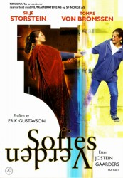

")
 gesehen am 08.08.2017
gesehen am 08.08.2017 
 IMDB-Wertung: 6.9 / 10
IMDB-Wertung: 6.9 / 10  Metascore:
Metascore: 
One day when Sophie comes home from school, she finds two questions in her mail: Who are you? and Where does the world come from? Before she knows it, she is pondering all the great questions of Western philosophy (from the Greeks to Kant, to Marx and Freud) with a mysterious mentor. But Sophie is also receiving a separate batch of equally unusual letters. Who is Hilde? And why does her mail keep turning up in Sophie's world? To solve this riddle, Sophie uses her new knowledge of philosophy, but the truth is far stranger than she could have imagined.
Jahr: 2000
Dauer: 23 Minuten
FSK:
Land: Norwegen Studio: FernsehjuwelenTonspuren:
Untertitel:
Auflösung: SD (716x568) Größe: 229 MB
Genre: Drama, Fantasy, Geschichte, TV-Serie
Regisseur: Erik Gustavson
Drehbuch: Audiovisuellt Produksjonsfond
Soundtrack:
Darsteller:
 Lars Arentz-Hansen als FN-offiser
Lars Arentz-Hansen als FN-offiser Hans Alfredson als Sokrates
Hans Alfredson als Sokrates Mark Tandy als Shakespeare
Mark Tandy als Shakespeare Ingar Helge Gimle als Herr Johnsen
Ingar Helge Gimle als Herr JohnsenDatei: X:\HD-Serien\Sofies Welt\Sofies Welt - S01E01.mkv seit 18.07.2017
Festplatte: HD Serien(I-ST)
 Es gibt insgesamt 182 Filme in der Gruppe 'HD-Serien'
Es gibt insgesamt 182 Filme in der Gruppe 'HD-Serien'